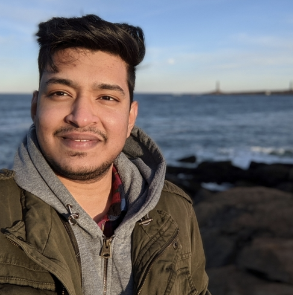

I am a Computer Vision Engineer working on perception related problems at Innovasea Systems.
Before joining Innovasea, I was a Robotics Engineering Masters student at the University of Maryland, College Park. My interests lie at the intersection of the fields of vision and lidar-based perception for Robotics. At UMD, I was a Research Assistant in the Robotics Algorithms and Autonomous Systems Lab at the University of Maryland, advised by Dr. Pratap Tokekar. I worked on implementing robust perception pipeline for the precise mapping of bridges from UAVs.
My work in the industry and academia includes an overlap of: Vision based Depth, Visual Odometry, Object Segmentation, Object Detection and Tracking, Visual SLAM, Structure from Motion (SfM), Lidar-Camera calibration and Sensor Fusion.
I did my undergrad in Instrumentation and Control Engineering at Nirma University, Ahmedabad where I worked with Prof. Sandip Mehta and Dr. Dilip Kothari.
